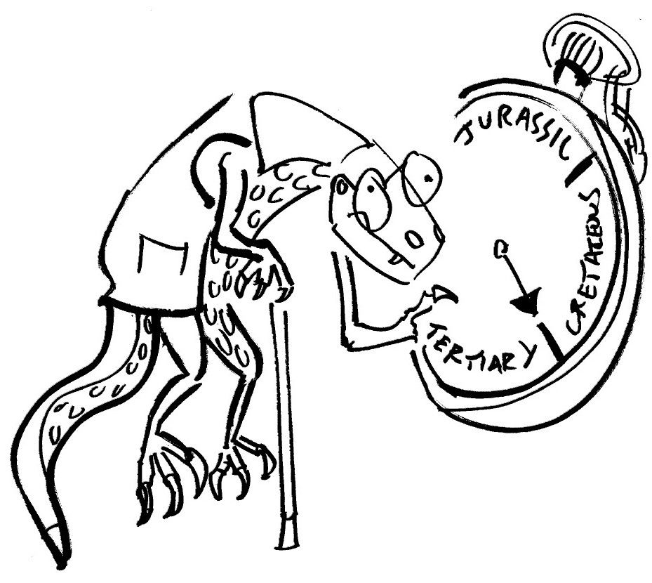
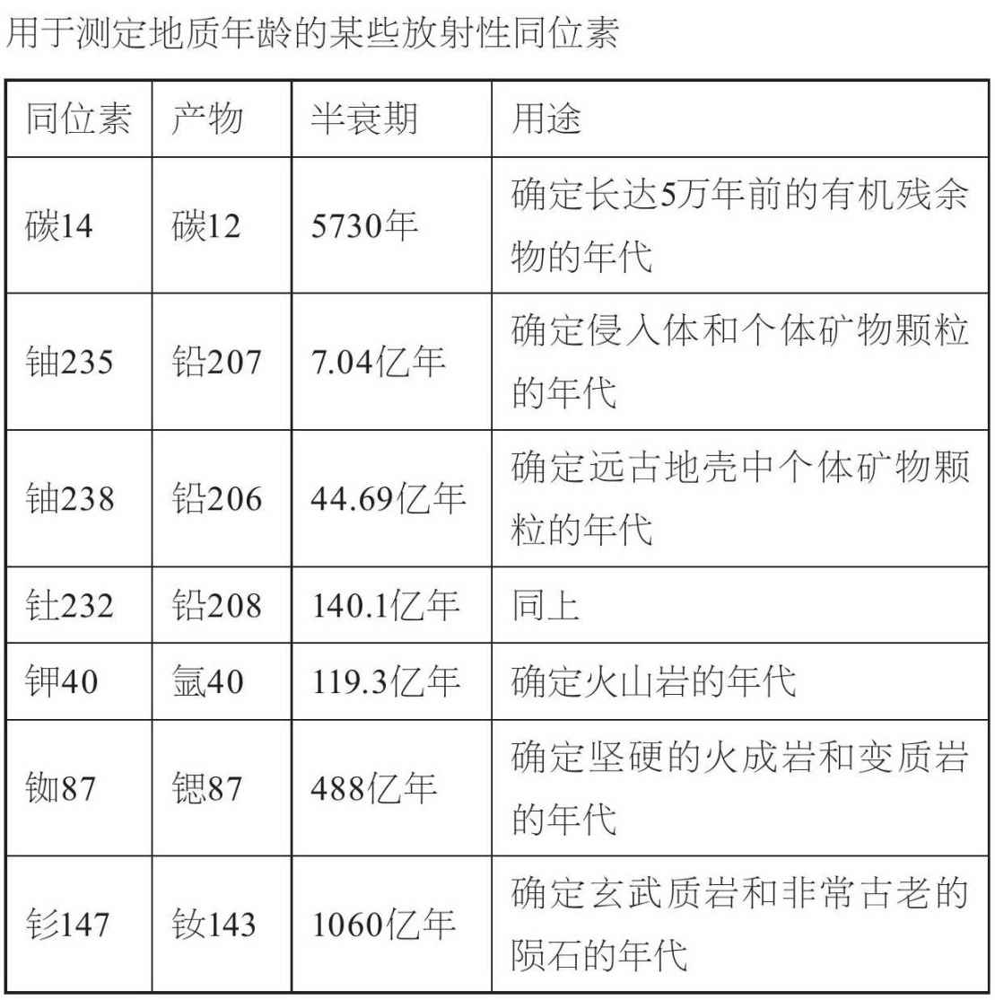
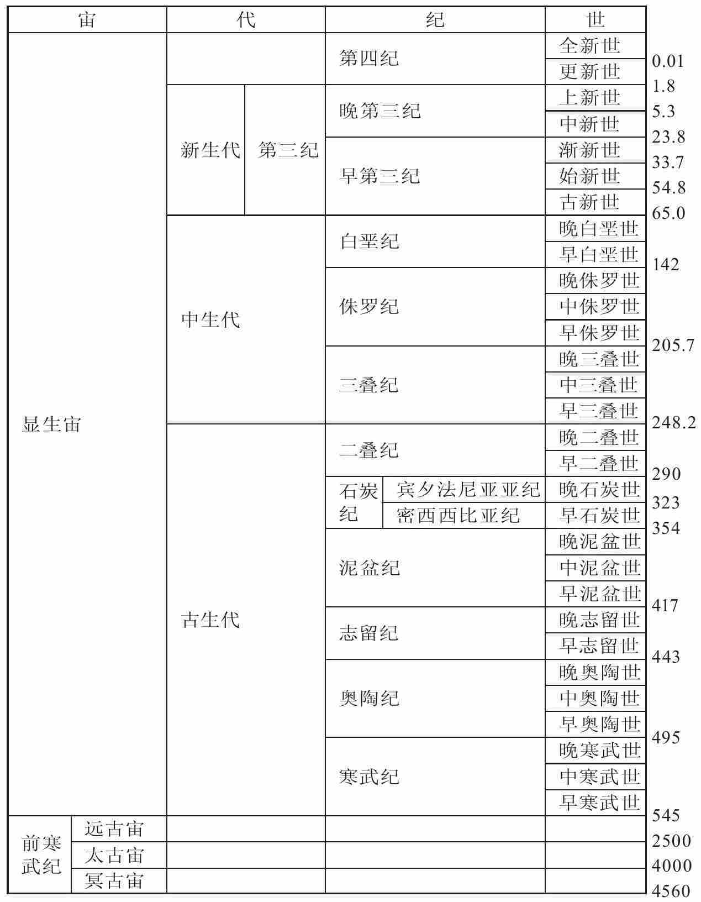

——道格拉斯·亚当斯，《银河系搭车客指南》

（图中文字按顺时针方向依次为：侏罗纪，白垩纪，第三纪）
世界不仅空间维度巨大，其时间之久远更是超出人们的想象。如果不了解约翰·麦克菲 [9] 、斯蒂芬·杰伊·古尔德 [10] 和亨利·吉 [11] 等作家笔下的“深时” [12] ，就无法全面掌握地质学的各种概念和运作过程。
我们大都认识自己的父母，许多人还记得祖父母，但只有少数人见过曾祖父母。他们的青年时代比我们所处的时代早一个多世纪，那对我们来说相当陌生，因为我们的科学认识和社会结构都已大不相同。仅仅十几代之前，英格兰还在伊丽莎白一世的统治之下，机械化运输和电子通讯还是人们做梦也想不到的事，欧洲人才首次探索美洲。30个世代之前，距离现在就有1000年，那时诺曼人尚未入侵英伦。人类用连续的文字记载来追溯自己的直系祖先，也是那以后的事情了。我们或许能够利用考古学和遗传学知识大致分辨出当时我们的祖先是什么人、他们可能住在什么地方，但我们永远不可能确凿无疑。50个世代之前，罗马帝国正处于全盛时期。150个世代之前，古埃及大金字塔还未建成。大约300个世代之前的欧洲新石器时代，最后一个冰川期刚刚结束，基本的农业是当时最新的技术革命。考古学看来无法揭示我们的祖先当时身居何处，尽管通过比较母系遗传的线粒体DNA（脱氧核糖核酸）可以确定大致的区域。给这个数字再加一个0，我们就回到了3000个世代之前，也就是10万年前。在这个时期，我们无法追溯任何现存种族群体的独立血统。线粒体DNA表明，在那之前不久，所有的现代人类在非洲拥有一个共同的母系祖先。然而从地质时间的角度来看，此皆近世之事。
这个时间乘以10，也就是100万年前，关于现代人类的线索就无从查考了。再乘上10，就能看到早期类人猿祖先的化石遗迹。在如此久远的过去，我们无法指着某个单一的物种，肯定地说我们的祖先就在这些个体之间。再乘上10，即一亿年前，就是恐龙生活的年代。那时人类的祖先一定还是些类似鼩鼱的微小生物。10亿年前，也就回到了最初的化石之间，可以辨认的动物或许还一只都没有出现。100亿年前，太阳和太阳系还没有诞生，如今组成人类生存的星球和人类本身的原子，当时还在其他恒星的核反应堆中炙烤沉浮。时间的确深邃悠远。
再来考虑一下区区数代间可发生哪些变化。与地球的年纪相比，人类的历史微不足道，然而几个世纪就见证了多次火山喷发、惨烈地震和毁灭性的滑坡。再想想破坏性不那么剧烈的变化，它们一直绵延不断。在30个世代之内，喜马拉雅山脉的若干部分升高了一米或更多。但与此同时，它们受到的侵蚀很可能多于一米。一些岛屿诞生了，另一些则被淹没。一些海岸由于受到侵蚀而变矮了数百米，另一些却高耸于水面之上。大西洋加宽了大约30米。好了，把所有这些距今较近的变化乘以10、100或1000，就可以看到在地质学上的“深时”期间，宇宙间可能发生了什么。
人类从史前时期就注意到了化石遗迹。某些古代的石器经过打磨削尖的一番折腾，似乎单纯就是为炫耀那些贝壳化石。一个古代伊特鲁里亚 [13] 的墓穴中就放置了一株巨型苏铁类植物的树干化石。但了解化石性质的努力却从近代才刚刚开始。地质科学最初兴起于信仰基督教的欧洲，那时人们的信仰主要源自《圣经》故事，因而在山区高地发现已灭绝生物的贝壳和骨头并没有令他们吃惊：那些都是在《圣经》记载的大洪水中消失的动物的遗骸。所谓的水成论者甚至认为花岗岩是远古海洋的沉淀物。洪水之类本是上帝的极端行为，这一概念促使人们想象地球是由大灾难造就的，直至18世纪末，这一直是普遍接受的理论。
1795年，苏格兰地质学家詹姆斯·赫顿出版了《地球论》（Theory of the Earth），该书如今已成名著。书中常被引用的一句话（尽管是改述的概要）是：“现在是通往过去的一把钥匙。”这是渐变论或均变论的理论，该理论认为，要想了解地质过程，就必须观察当前正在发生的那些几乎察觉不到的缓慢变化，然后只需在历史上加以追溯即可。查尔斯·莱尔 [14] 阐述了这一理论并始终为之辩护，他生于1797年，赫顿恰是在那年去世的。赫顿与莱尔两人都试图将对创世和洪水等事件的宗教信仰搁置一旁，提出作用于地球的渐进过程是无始无终的。
试图计算地球年龄的努力最初起源于神学。所谓的神创论者照字面意义解释《圣经》，因而坚称神创造世界仅用了七个整天，要算是相对近代的事。圣奥古斯丁在其对于《圣经·创世记》的评注中指出，上帝的视野远在时间之外，因而《圣经》中所提到的创世期间的每一天都可能比24小时长得多。就连在17世纪被人们广泛引用、由爱尔兰的厄谢尔大主教做出的估计——地球是公元前4004年创造出来的——也只是为了估算地球的最小年龄，而且是基于对史料的仔细研究，尤其是好几代大主教和《圣经》中提到的诸位先知所记载的史料。
首次基于地质学估计地球年龄的认真尝试是1860年由约翰·菲利普斯所为。他估计了当前的沉积速率和所有已知地层的累积厚度，估算出地球的年龄将近9600万年。威廉·汤普森——后来的开尔文勋爵——继承了这一观点，基于地球从起初的熔融态炙热球体冷却所需的时间，做出了估计。值得一提的是，他起初估算出的地球年龄也是非常接近的数字，即9800万年，不过后来他进一步推敲，将其缩短至4000万年。但均变论者和查尔斯·达尔文认为他们估算的年代还是太近，基于达尔文提出的自然选择演化论，物种的起源需要更长的时间。
20世纪初，人们认识到额外的热量或许来自地球内部的放射现象。因此，基于开尔文的构想，地史学得以拓展。然而，最终促使我们如今对地球年龄进行日益精确估计的，还是对放射现象的理解。很多元素都以不同的形态或同位素的形式存在，其中一些具有放射性。每一种放射性同位素都有其独特的半衰期，在此期间，该种元素任意给定样品的同位素均可衰变一半。就这种同位素本身而言，这没有什么用处，除非我们知道衰变开始时的准确原子数量。但通过测量不同的同位素的衰变速率及其产物，就有可能得到异常精确的年代。20世纪早期，欧内斯特·卢瑟福 [15] 宣布，某种名为沥青铀矿的放射性矿物，其一份特定样品的地质年龄有7亿年之久，比当时很多人认为的地球年龄要长得多。此言一发即引起了巨大轰动。后来，剑桥大学物理学家R.J.斯特拉特 [16] 通过累计钍元素衰变所产生的氦气证明，一份来自锡兰（今斯里兰卡）的矿物样品的地质年龄已逾24亿年。
在放射性测定地质年代方面，铀是一种很有用的元素。铀在自然界有两种同位素——它们是同一元素的不同形式，差别仅在于中子的数量，因而原子量也有差别。铀238经由不同的中间产物最终衰变成铅206，其半衰期为45.1亿年，而铀235衰变成铅207，其寿命不过7.13亿年。对从岩石中提取的这四种同位素进行比率分析，加之以衰变过程中产生的氦气累计，就可以给出相当准确的年代。1913年，阿瑟·霍姆斯 [17] 使用这一方法，首次准确估计了过去6亿年间各个地质时期的持续年代。
放射性测定地质年代技术的成功在相当程度上得益于质谱仪的效力，这种仪器实际上可以将单个原子按重量排序，因而使用非常少量的样品即可给出痕量组分的同位素比率。但其准确性取决于有关半衰期的假设、同位素的初始丰富度，以及衰变产物随后可能发生的逸出。铀同位素的半衰期令其很适合用于测定地球上最古老的岩石。碳14的半衰期仅为5730年。在大气层中，碳14由于宇宙射线的作用而不断得到补给。一旦碳元素被植物吸收，植物死亡后，同位素不会再得到补给，从那一刻起，碳14的衰变就开始了。因此，用它来测量诸如考古遗址的树木年龄等再合适不过了。然而事实上，大气层中的碳14含量是随着宇宙射线的活动而变化的。正因为已知树木的年轮就可以独立计算出年代，我们才知道可以用碳14作为测定工具，并对长达2000年的碳定年予以校正。

仔细观察某个崖面上的一段沉积岩，能看出它包含若干层。有时，与洪水和干旱相对应的年层是肉眼可见的。更多时候，地层代表成千上万甚至数亿年间偶然发生的灾难性事件，或者缓慢而稳定的沉淀，紧随其后发生的环境变化会导致岩石层略有不同。如果古岩石片段纵深很长，像美国亚利桑那州的大峡谷那样，则表示有数亿年的沉积。人类天生喜爱分门别类，多层沉积岩显然很能迎合这一癖好。但在观察一个体量狭窄的平层崖面时，人们很容易忘记这些岩层在全世界范围内并不是连续的。整个地球从来没有被类似沉积岩那样的单一海洋浅覆层覆盖过！正如现今地球上有河流、湖泊，还有海洋、沙漠、森林和草原，远古时期也一样，那时地球上也存在着一系列壮观的沉积环境。
19世纪初，英国土木工程师威廉·史密斯首先了解到这一点。他当时在为英国的新运河网勘探地形，发现国内各地的岩石有时会包含相似的化石。在某些情况下，岩石的类型相同，而有时只是化石相似。史密斯以此为依据，为不同地方的岩石建立关联，并设计出一个全面的序列。最终，他发表了世界上第一张地质图。20世纪人们又测定出很多地质年代，加之不同大陆间的岩石被关联起来，就能够发布一个单一岩层序列，用来代表整个世界范围内的各个地质时期了。我们如今所知的地质柱状剖面是多种技能相结合的产物，推敲经年，并经国际协作，达成了一致意见。
地质年代的主要分期

图5 地质年代的主要分期（不按比例）。所列年代（位于右侧，以距今百万年为单位）是2000年国际地层委员会表决通过的
显然，地质柱状剖面中的某些变化更加剧烈，人们根据这一便利，将地质历史划分为不同的代、纪和世。有时，岩石性质会发生突然而显著的变化，跨越了某一地质历史界限，这表明环境出现了重大变化。有时会发生所谓的非均变，是由诸如海平面变化等原因导致的沉积作用中断，因而要么沉积作用终止，要么岩层在柱状剖面延续之前便被侵蚀殆尽。化石所记录的动物区系的重大变化也是这类突变的标志，很多物种灭绝了，新的物种开始出现。
地质记录中出现的几次间隔突出显示了其间发生的严重的大规模物种灭绝。寒武纪末期和二叠纪末期都以海洋无脊椎动物中将近50%的科类物种和高达95%的个体物种的灭绝为标志。在标记了三叠纪后期和泥盆纪后期的物种灭绝期间，分别有大约30%和略低于26%的科类物种消失了，但是，距今最近也最著名的大规模消亡则发生在6500万年前的白垩纪末期。所谓的K/T界线 [18] 之所以举世皆知，不仅因为在此期间最后一批恐龙灭绝，还因为它为该物种灭绝的原因提供了充分证据。
沃尔特 [19] 和路易斯·阿尔瓦雷茨 [20] 首先提出，恐龙灭绝可能是天体碰撞的结果，此提法起初并没有多少科学依据。但是，他们随即发现，在地质柱状剖面中的那一个时间点上，沉积物窄带中富含铱，这是某些类型的陨石中富含的元素。但没有发现那一时期的撞击坑的迹象。再后来，证据开始出现，不是来自陆地，而是在墨西哥尤卡坦半岛离岸很近的海中，这一掩在海下的撞击坑直径达200公里。在广阔得多的区域还发现了碎片的证据。如果像科学家们计算的那样，这一地点标记了直径或达16公里的小行星或彗星撞击地球的位置，其结果的确会是毁灭性的。除了撞击本身的影响及其所导致的海啸，如此众多的岩石也将会蒸发并散布在地球的大气层中。起初，气候会无比炎热，辐射热会引发地面上的森林火灾。灰尘会在大气层中停留数年之久，遮天蔽日，造成环球严冬，导致食用植物和浮游生物大量死亡。撞击地点的海床含有富硫酸盐矿物的岩石，这些物质会蒸发，并导致致命的酸雨，从大气层中冲刷而下。如果发生了这样的灾难还有任何生物幸存下来，才真是令人称奇。
我们曾一度很难理解物种大规模灭绝究竟是如何发生的，而如今出现了很多彼此对立的理论，又让人不知道该信哪个好了。这些理论多涉及剧烈的气候变化，有些由宇宙撞击或海平面、洋流和温室气体的变化所引发，还有些是由诸如漂移或重大的火山活动等地球内部的原因所导致的。的确，我们所知的大多数物种大灭绝似乎至少都与溢流玄武岩大喷发大致同时发生。在白垩纪末期，正是这些大喷发在印度西部产生了德干地盾。甚至还有一种观点认为，小行星的一次大撞击引起了在地球另一侧聚焦的冲击波，从而引起了大喷发。但是时间和方位看来并不足以支持那种解释。无论是何原因，生命和地球的历史总是不时被一些灾难性事件打断。
我们都记得过去十年左右所经历的极端气候事件，像是最寒冷的冬天、洪水、暴风雨，或是干旱等等。若把时间推回到一个世纪之前，恐怕只有那些更大的事件才会令人印象深刻。专家在规划水灾的海岸维护与河流防线时，经常会使用“百年不遇”的概念；这些防线的设计要经得起百年一遇的洪水才行，它们很可能比十年一遇的洪水要严重得多。但如果把考察的时间延展到1000年或100万年，总还会有更大、更严重的事件。据某些理论家所言，从水灾、暴风雨和干旱到地震、火山喷发和小行星撞击皆是如此。在地质历史的尺度上，我们可要小心点儿才是！
书本中经常列出的地质时期表只会回溯到大约6亿年前寒武纪开始的时间，而忽略了我们这个星球40亿年的历史。正如美国加州大学的比尔·舍普夫 [21] 教授所说，大多数前寒武纪岩石的问题，在于它们无法鉴定——乱七八糟，没有任何方法可以识别。地球内部持续的构造再处理，以及地表风化和侵蚀的不断打击，意味着好不容易幸存下来的大多数前寒武纪岩石都有着严重的折痕和变形。不过，在大多数晴朗之夜，人们都可以看见有40多亿年历史的岩石——得要举头望明月，而不是低头看地球。月球是个冰冷死寂的世界，没有火山和地震、水或气候来改换新颜。它的表面覆盖着陨石坑，但其中大多数都是在月球形成的早期发生的，当时太阳系里还充满着飞散的碎片。
至于在地球上幸存下来的前寒武纪岩石，它们诉说着一个古老而迷人的故事。它们并不像达尔文猜想的那样全无生命的痕迹。的确，在前寒武纪末期，从大约6.5亿年前到5.44亿年前，曾经出现了各种怪异的化石，特别是在澳大利亚南部、纳米比亚和俄罗斯等地。在那以前似乎有过一个特别严酷的冰河作用时期。有人使用了“雪球地球”这种说法，表示环球的海洋在当时有可能全部冻结。对生命而言，那必定是一个重大的挫折，并且没有多少证据能够证明在此之前出现过多细胞生命形式。但大量证据表明那时已经出现了微生物——细菌、蓝藻细菌和丝状藻类。澳大利亚和南非有距今大约35亿年的丝状微化石，而格陵兰岛38亿年高龄岩石中的碳同位素看上去也像生命的化学印记。
在起初的7亿年历史中，地球一定特别荒凉。当时有为数众多的大撞击，剧烈程度远甚于或许造成了恐龙灭绝的那一次。后一次重轰炸期的疤痕还能在月球上的月海中看到，那些月海本身就是巨大的陨石坑，充满了撞击所熔融的玄武岩熔岩。这样的撞击会熔融大量的地球表面，并无疑会把任何原始海洋蒸发殆尽。如今我们星球上的水很可能来自随后的彗星雨及火山气体。
人们一度认为，地球早期的大气层是甲烷、氨、水和氢的气体混合物，这是组成原始生命形式的碳的潜在来源。但如今人们认为，来自年轻太阳的强烈紫外线辐射迅速分解了那种气体混合物，产生了二氧化碳和氮气的大气层。生命的起源仍是个未解之谜。甚至有人认为，生命可能源自外星，是来自火星或者更远星球的陨石抵达地球后带来的。但当前的实验室研究表明，某些化学体系可以开始进行自我组织并催化其自身的复制。有关现今生命形式的分析指出，最原始的生命并非那种以有机碳为食，或利用阳光助其光合作用的细菌，而是如今在深海热液喷溢口发现的那种利用化学能的细菌。
到35亿年前，几乎必然存在着微小的蓝藻细菌，多半也已经出现了原始藻类——就是我们如今在死水塘中看到的那种东西。这些生物开始产生了戏剧性的效果。它们利用阳光作为光合作用的动力，从大气层中吸收二氧化碳，有效地侵蚀着二氧化碳保护层，这可是在太阳作用较弱时通过温室效应给地球保暖的。这或许最终导致了前寒武纪末期的冰川作用。但在此很久以前，这些生物的作用就已经导致空前绝后的最糟糕的污染事件。光合作用释放了一种此前从未在地球上存在过的气体——氧气，对很多生命形式可能是有害的。起初，氧气不能在大气层中长期存在，但它很快就与海水中溶解的铁元素发生反应，产生了条带状氧化铁的密集覆层。整个世界都生锈了——这可不是什么夸张的说法。但光合作用仍在继续，大约24亿年前，游离氧开始在大气层中逐渐积累，为可以呼吸氧气和进食植物的动物生命的到来铺平了道路。
大约45亿年前，曾有一大片气体尘埃云，这是以前若干代恒星的产物。在重力的影响下，这片云开始收缩，其过程或许还由于附近某颗恒星爆炸或超新星的冲击波而加速。随着这片云的收缩，其内的轻微旋转加速，将尘埃散布出去，在原始星体周围形成扁平的圆盘。最终，主要由氢和氦组成的中心物质收缩到足以在其核心引发核聚变反应，太阳开始发光。一阵带电粒子的风开始向外吹，清除了周围的部分尘埃。在这片星云或圆盘的内部，只剩下耐火的硅酸盐。在远处，氢和氦加速形成了庞大的气体行星：土星和木星。水、甲烷和氮等挥发性冻结物被推到更远处，形成了外行星、柯伊伯带 [22] 天体和彗星。
内行星——水星、金星、地球和火星——是由已知的增积过程形成的，起初粒子彼此碰撞，有时会裂开，偶尔也会彼此联合。最终，较大的粒子团积累足够的重力引力，把其他粒子团拉向它们。随着体积的增长，撞击的能量也增加了，撞击熔融了岩石并导致其成分析出，其中密度最大、富含铁元素的矿物质下沉形成了核心。在撞击、重力收缩释放的能量，以及放射性同位素衰变等多重作用之下，崭新的地球变得十分炙热，大概至少有一部分被熔解了。前太阳星云 [23] 中的很多放射性元素可能在超新星爆炸前不久就产生了，仍因其具有放射性而十分炎热。因此，地球表面起初很难有液态水存在，而且最初的大气层可能多半都被太阳风吹散了。
长期以来，月球的形成对科学界来说一直是一个谜。人们一度认为月球是从年轻的地球中分离出去，在地球旁边形成，或在经过地球时被其捕获的，但月球的组成、轨道和自转与这种说法并不吻合。然而现在有一个理论很合乎情理，也用计算机模型进行了很有说服力的模拟。该理论指出，一个火星大小的原行星曾在太阳系形成大约5000万年之后与地球发生了碰撞。这一抛射物的核心与地球的核心相融合，撞击力熔融了地球的大部分内部物质。撞击物的大部分外层，连同某些地球物质一起被蒸发并投入太空。其中的许多物质聚集在轨道中，累积合生，形成了月球。这次灾难性事件让我们收获了一个良朋挚友，它对于地球似乎有着稳定的作用，防止地球自转轴的无序摇摆，因而让我们的行星成为生命更宜居的家园。